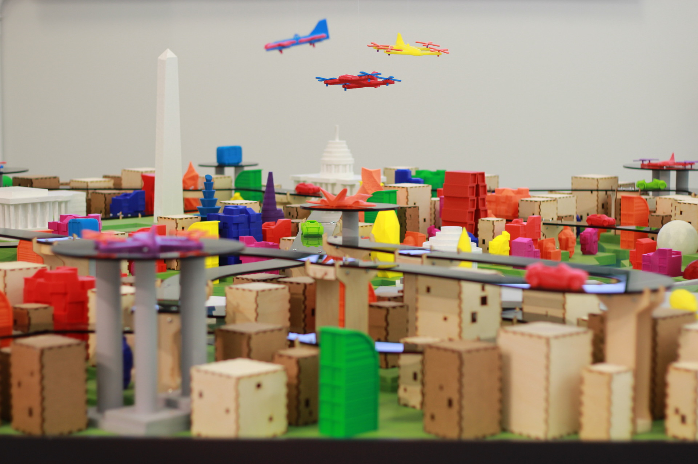
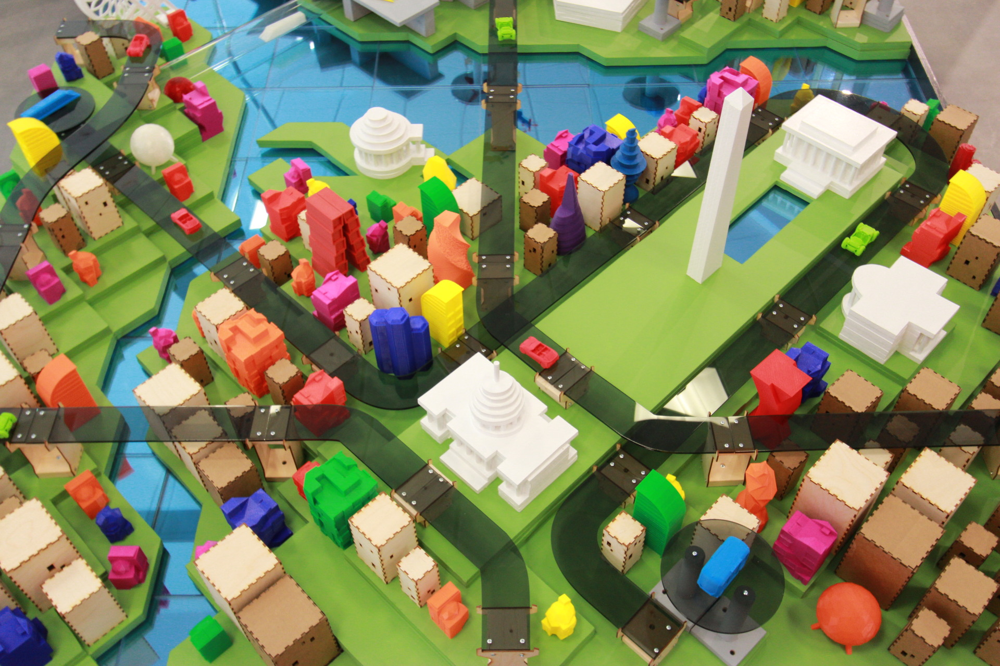
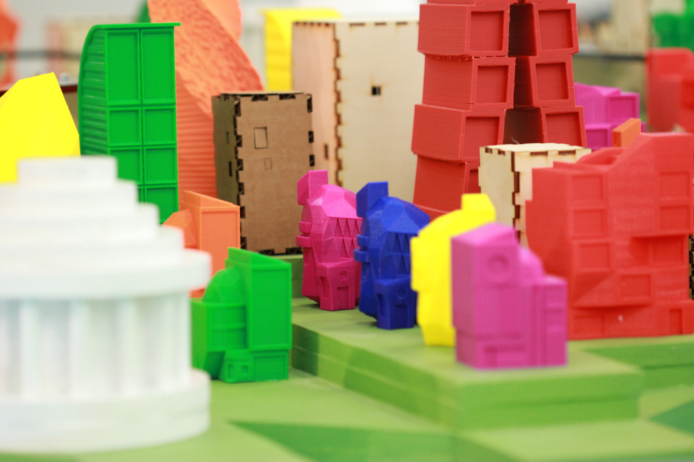
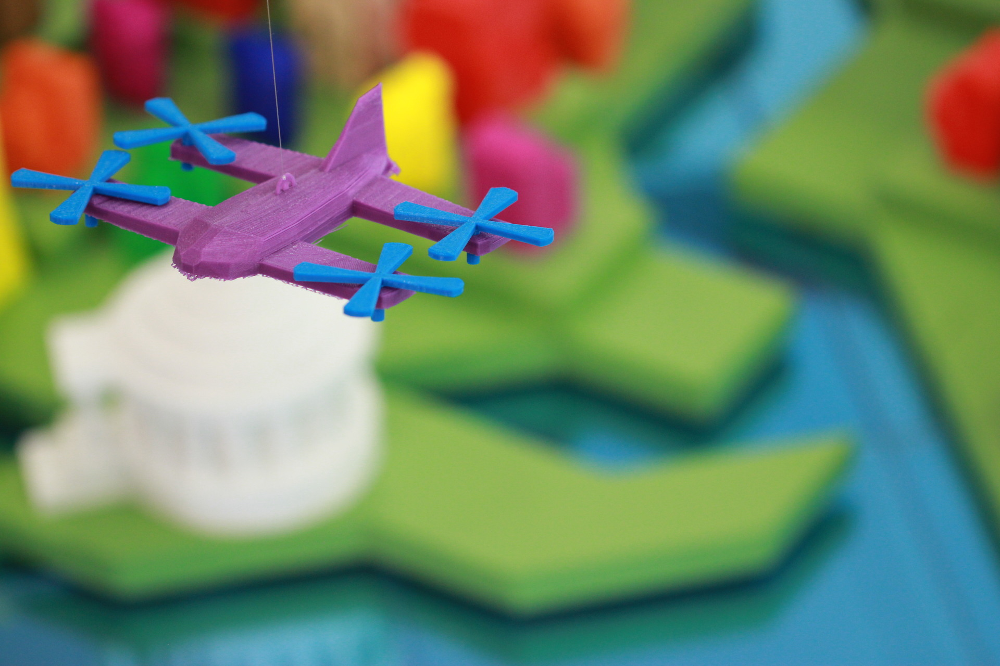
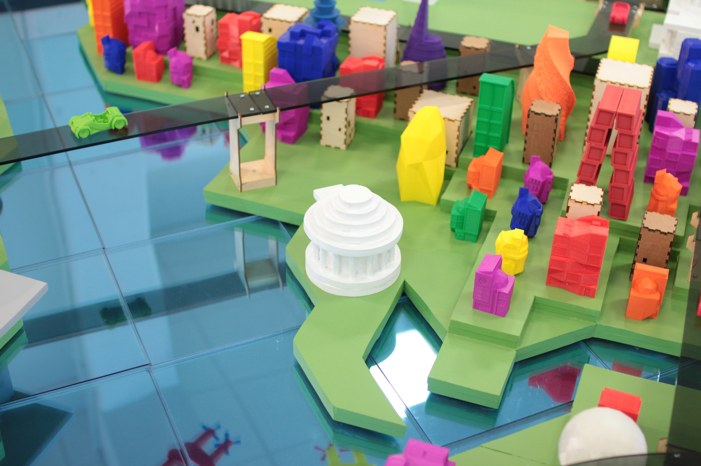
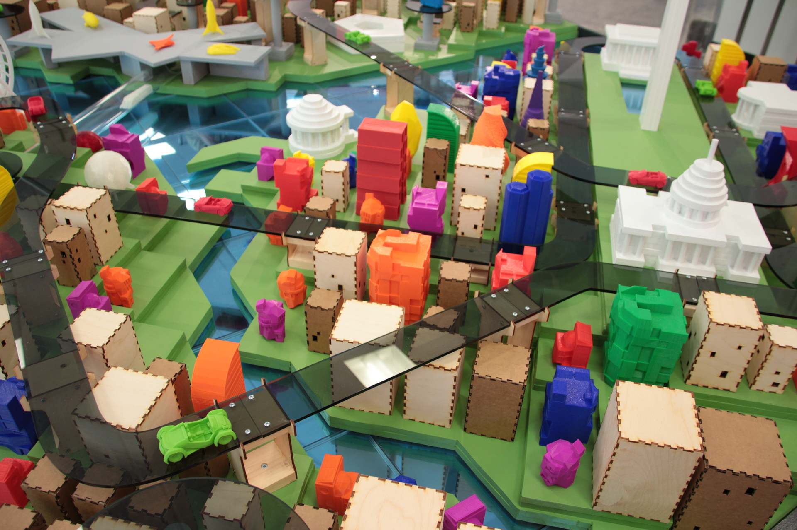
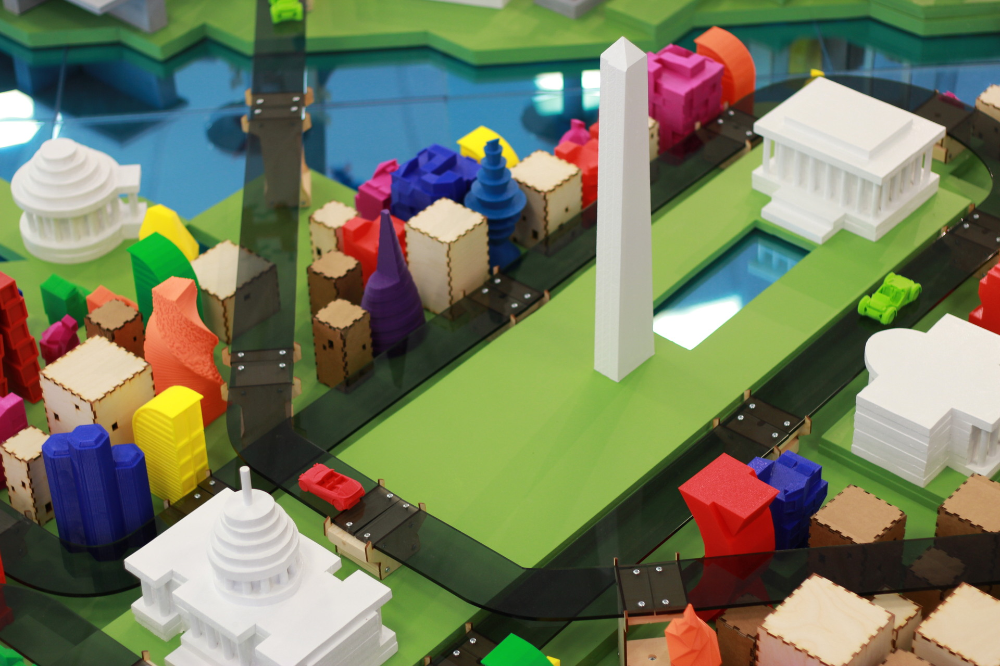
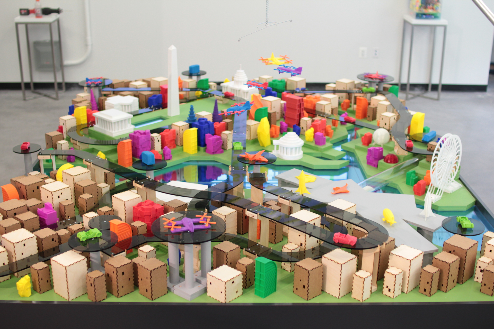

In a collaboration with Two Bit Circus, my brother and I designed, fabricated and installed a scale model, artistic interpretation of the future of Washington, DC featuring 3D printed buildings and vehicles in the newly opened LocalMotors storefront in National Harbor, MD.
       